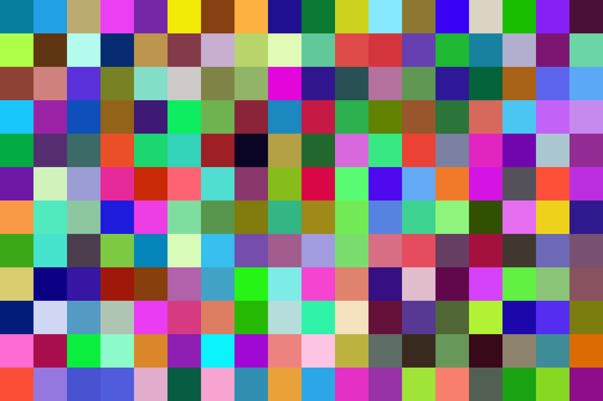
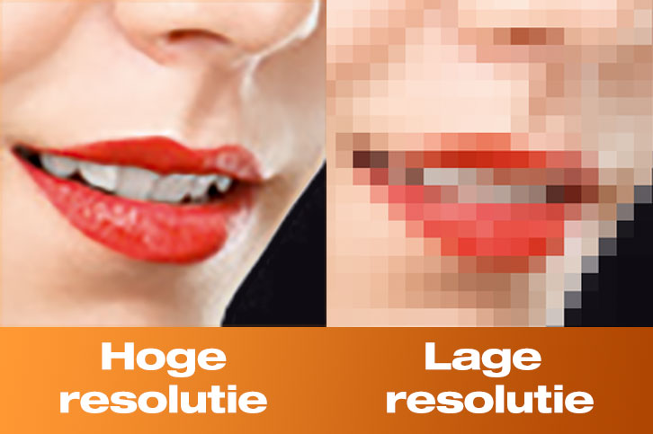

Kleurmodellen zijn systemen die ons helpen kleuren op een gestructureerde manier te beschrijven. Ze zijn belangrijk omdat ze bepalen hoe kleuren worden weergegeven op verschillende apparaten, zoals computerschermen en printers. Elk kleurmodel heeft een eigen manier om kleuren te definiëren, afhankelijk van hoe kleuren worden gecombineerd en weergegeven.
RGB staat voor Rood Groen Blauw, de 3 belangrijkste kleuren. Kleuren worden gemaakt door deze 3 te combineren. Meer licht maakt de kleur lichter. Het wordt gebruikt op shcermen zoals televisies of computers.
CMYK staat voor Cyan, Magenta, Yellow en Key. Net als RGB is het een systeem om kleuren vast te leggen in een code. CMYK wordt meer gebruikt om donkerdere kleuren te maken.
Hieronder zie je een afbeelding en het verschil tussen CMYK en RGB.

Pixels zijn kleine gekleurde puntjes die samen een afbeelding op een scherm maken. Hoe meer pixels er zijn, hoe scherper het beeld. Als je inzoomt op een foto, zie je dat het uit kleine vierkantjes bestaat, dat zijn de pixels! Op een scherp scherm zie je die puntjes niet met het blote oog, maar samen maken ze de afbeelding die je ziet. Pixels gebruiken een mix van rood, groen en blauw om verschillende kleuren te maken. Door deze kleuren te mengen, kunnen ze heel veel verschillende kleuren weergeven.
Resolutie vertelt je hoeveel pixels er in een afbeelding of op een scherm zitten. Het wordt meestal aangegeven met twee getallen, bijvoorbeeld 1920x1080. Dit betekent dat het beeld 1920 pixels breed is en 1080 pixels hoog.
